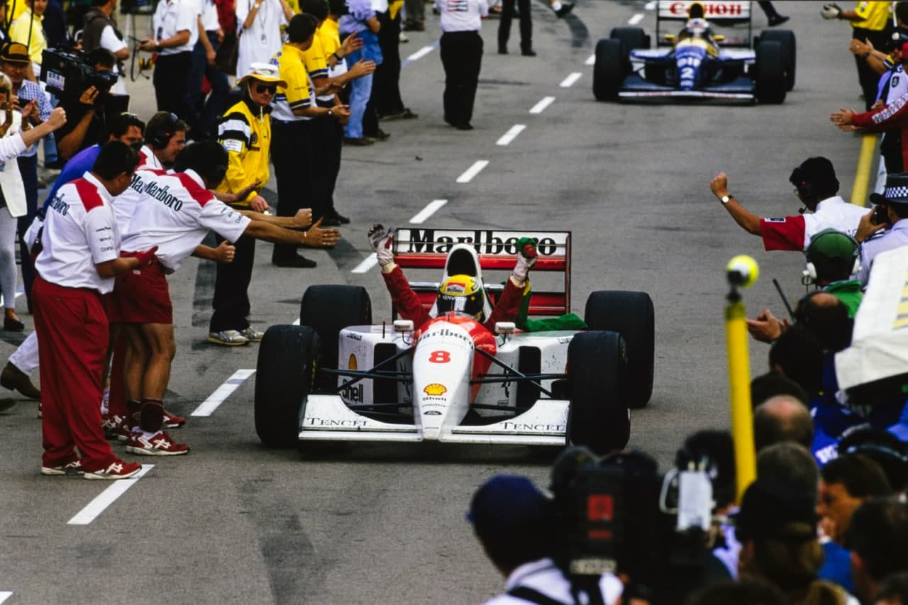
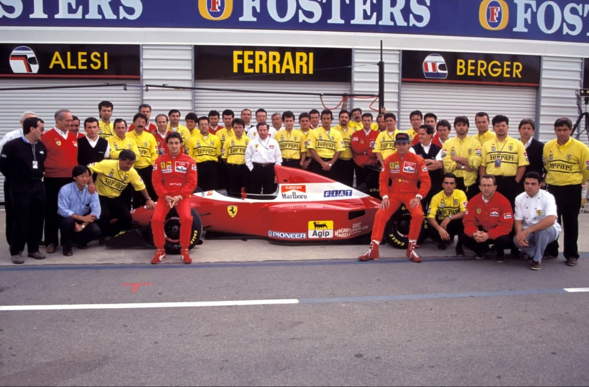
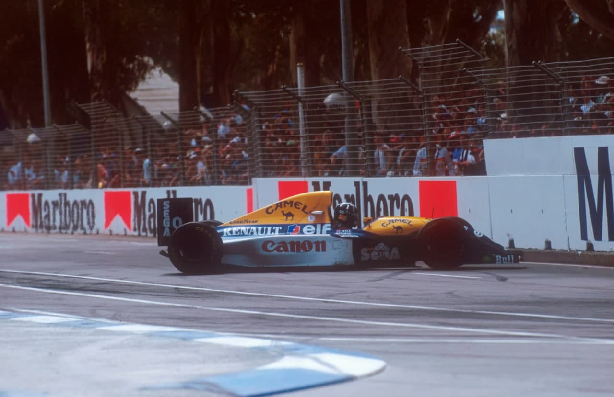
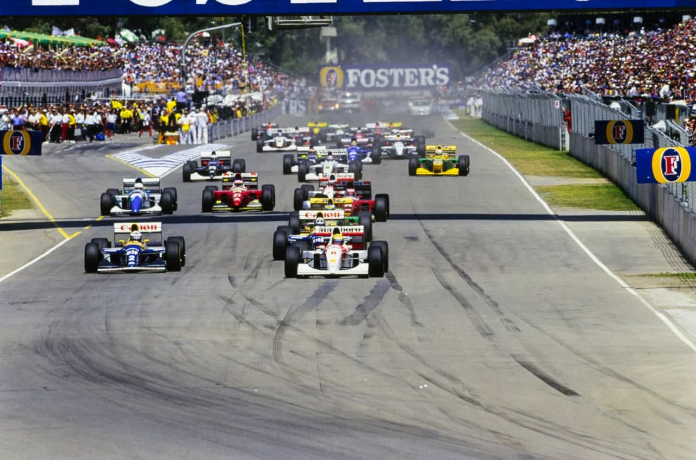
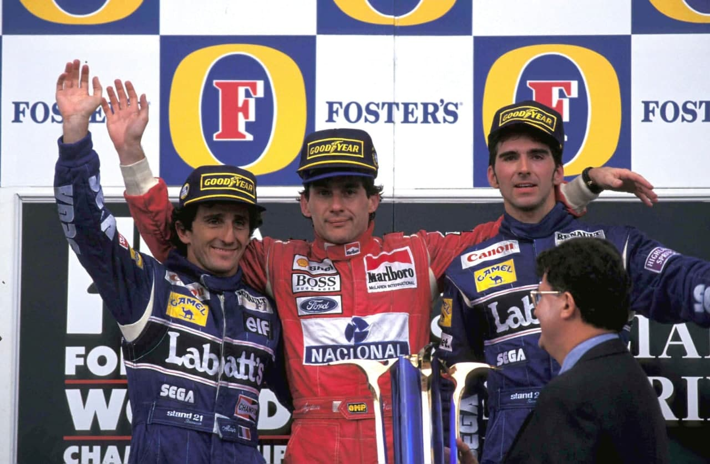

Adelaide - 07/11/1993
HISTÓRIA FEITA

Senna vence e garante os vice-campeonatos para ele e para a McLaren. Prost é 2º em seu último GP. Pódio carregado de emoção, com Prost e Senna abraçados. Hill perde vice, mas fez excelente corrida. McLaren recordista de vitórias. Dois Ferrari nos pontos. Acidente de Lamy com Katayama na primeira curva.
Por Francisco Santos
Estavam em jogo os vice-campeonatos de pilotos e de marcas. Ayrton Senna faturou ambos. Para ele próprio e para Ron Dennis, de quem se despediu depois de seis anos de frutuosa convivência. Para Alain Prost era o último GP de sua carreira e daí, ele querer terminar com chave de ouro uma brilhante carreira de 20 anos e 13 de F1. Após fazer a sua melhor largada do ano, confirmou o que foi norma este ano de não vencer nenhuma das corridas em que largou bem. “Não foi mau de todo, terminar no pódio a minha última corrida”, confessou emocionado, no fim. Damon Hill defendia nas ruas de Adelaide que ele não conhecia o seu segundo lugar no campeonato, com a magra vantagem de dois pontos para um Ayrton Senna totalmente motivado para oferecer à sua equipe um presente de despedida. Largando da terceira posição do grid, conquistada com gana no segundo dia, Damon foi à luta, trocou de pneus antes que Senna e de Prost, à 22ª volta, beneficiou do abandono de Schumacher, voltou rápido, manteve-se em terceiro atrás de Prost, depois de Senna, e ainda depois de Prost, nas paradas de cada um deles, voltou a trocar de pneus, numa decisão arriscada não-prevista pelo box, voltou fazendo voltas mais rápidas repetidas aproximou-se de Prost e chegou mesmo a esboçar passá-lo no final do retão, na 66ª volta. Seu Williams tinha uma regulagem diferente, com menos apoio aerodinâmico e suspensão mais macia, o que se tomava favorável no final da prova, com menos carga de combustível. Colocou-se ao lado de seu chefe de fila, e meteu o bico para passar. “Vi o Damon a meu lado na reta, freei o mais tarde possível, e abri a entrada da curva para ele não pensar que eu o iria fechar”, esclareceu Prost. Mas, Hill, vinha muito forte, e, para não bater teve de frear muito, comprometendo a sua trajetória. Quando viu que tinha espaço acelerou, mas o fez cedo demais, rodando, ficando atravessado na pista. Prost ficava tranquilo em segundo, com 21s de vantagem sobre Hill, que mesmo assim ainda bateu o recorde do circuito. Senna, na frente, já havia trocado segunda vez de pneus e tinha uma vantagem de 13,2s sobre Prost. Foi apenas completar as 79 voltas de uma corrida brilhante. Em quarto terminou um brilhante Alesi na frente de seu colega Berger: pela primeira vez no ano os dois Ferrari terminaram, nos pontos. Pedro Lamy não conseguiu fazer mais do que 300 melros. Logo na primeira chicane Katayama bateu-lhe de lado e o Lotus voou para o meio da pista, rodando e ficando atravessado. Pedro ainda tentou arrancar, mas o motor morreu e ele teve de abandonar.

Férias e descontração
Este último GP do ano tem um ambiente diferente, já meio de férias, num clima propício – temperaturas de verão, gente aberta e hospitaleira, desejosa de proporcionar bons momentos de lazer a todo o circo, e uma organização voltada para a promoção. São festas, coquetéis, concertos, festejos de rua, e muito chopp e uísque o tempo todo. Para pilotos e equipes, com ambos os títulos já decididos, longe da Europa e das tratativas no Japão, já é tempo de férias para uns e de passar uns dias de lazer para se refazerem para a luta de final de ano na luta pelos patrocínios e dos contratos. Por tudo isso, Adelaide tem sempre um clima descontraído. No entanto, este ano houve dois importantes eventos de grande carga emocional, o último GP da carreira de Prost e de Senna na McLaren. Prost, menos emocional que o paulista, enfrentou a situação melhor. Antes da prova, Ayrton foi-se abaixo emocionalmente, caindo nos braços de Jo Ramirez e descarregando em lágrimas todas as emoções vividas ao longo de seis anos. No final da corrida, Ron Dennis esperava por ele na garagem das vistorias. Foi outra choradeira, com os dois amigos e cúmplices de tantos sucessos e lutas agarrados, lágrimas caindo no ombro de Dennis, olhos de Senna revendo os bons momentos passados juntos. Metros ao lado, meio sem graça, Prost disfarçava, baixando-se debaixo do aerofólio do Williams, como se escondendo das emoções, que também eram suas. Momentos depois os dois pilotos se cruzam e se cumprimentam. No pódio, Ayrton, com lágrimas nos olhos, fez questão de não só levantar os braços de seus dois colegas de equipe – passado e futuro – como de abraçar Prost e de lhe desejar felicidades. Final feliz para os dois maiores pilotos da última década. Parabéns.

Pole de Ayrton
Pela primeira vez no ano, a Williams-Renault deixa de fazer a pole e falha assim o recorde histórico de ser a primeira equipe a conseguir todas as poles de um campeonato. Não só o equilíbrio dos McLaren tem melhorado muito desde setembro, como os chassis Williams têm estagnado, possivelmente porque a equipe técnica de Patrick Head, uma vez ambos os títulos já garantidos, se terá dedicado mais ao desenvolvimento do carro de 1994. Além disso, a genialidade de Senna em escolher o melhor momento para fazer as suas voltas-canhão permitiu-lhe conquistar a pole logo à 7ª volta, com um tempo recorde. Por outro lado, Prost, embora sempre com a sua pilotagem super-precisa cometeu dois erros: na sua última volta de 6ª feira, exagerou numa curva a esquerda e quase rodou, e no sábado perdeu tempo demais no box e saiu para a pista para a sua derradeira tentativa tarde demais, deixando de usar 2 voltas. Hill, aprendendo este circuito, não conseguiu aproximar-se dos melhores tempos, apesar de ser o mais veloz. Berger chegou a ter o 2º melhor tempo na primeira qualificação, após ter batido forte de manhã, enquanto Warwick nem sequer apareceu na pista, devido a uma bronquite forte. Pedro Lamy rodou duas vezes, mas de forma desculpável, não só porque a Lotus parece ter perdido o rumo, com os carros quase inguiáveis, como as suas rodadas foram sempre em zonas escorregadias, e da primeira vez conseguiu mesmo deixar o motor funcionando. Quem se deu pior foi De Cesaris que bateu forte por duas vezes danificando bastante o Tyrrell. Irvine, desta vez não tinha a vantagem do conhecimento da pista e estava em igualdade de condições dos outros pilotos. Além disso, na primeira qualificação o motor Ilmor falhou persistentemente, roubando uns 50 km/h de velocidade máxima. Várias equipes usaram de novo aerofólios traseiros triplos, “à la Footwork”, enquanto a Benetton voltou a usar as quatro rodas direcionais.

Três largadas
A largada deste GP foi sem dúvida diferente. Aliás, foram três largadas. Primeiro, Brundle deixou o motor morrer no grid de formação e teve de largar em último. Depois na primeira largada Katayama também deixou morrer o motor e foi-lhe aplicada a nova penalização pelo aborto da largada – largou em último, enquanto o Ligier de Brundle era empurrado para a sua posição anterior. Na segunda largada, foi Eddie Irvine que distraidamente colocou o Jordan adiante da sua posição, e a segunda largada foi também abortada. Ken Tyrrell protestou por Katayama não ser reconduzido na sua posição normal nem por Irvine ser penalizado, e finalmente o último GP do ano começou. E, foi diferente: Prost largou muito bem, porém não suficientemente bem para chegar à primeira curva primeiro que Senna, que disparou na liderança com um ritmo infernal nessas primeiras voltas para ganhar vantagem para às duas planejadas trocas de pneus, enquanto se previa apenas uma para os Williams. Logo na primeira curva ficou Lamy, no mesmo local onde também sairiam mais tarde Lehto, pelo acelerador se ter prendido e Wendlinger por quebra de um disco de freio. Schumacher tinha boas chances nesta prova com o Benetton 4WS, mas o motor quebrou cedo, logo após ter sido o primeiro a trocar de pneus, usando a mesma tática que o ajudara a ganhar em Portugal. Hakkinen ficou desiludido – dava trabalho a Hill, mas abandonou no box com vazamento de óleo de freios. Quem também teve problemas foi Senna: no gancho o motor morria, mas o problema elétrico sanou por si próprio.
